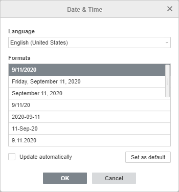

Umetanje datuma i vremena
Da biste umetnuli Datum i vreme u Editor dokumenata,
- postavite kursor na mesto gde želite da umetnete Datum i vreme,
- prebacite se na karticu Umetni u gornjoj traci sa alatkama,
- kliknite na ikonu Datum i vreme u gornjoj traci,
-
u prozoru Datum i vreme koji će se pojaviti, odredite sledeće parametre:
- Izaberite željeni jezik.
- Izaberite jedan od ponuđenih formata.
-
Označite polje Ažuriraj automatski da bi se datum i vreme automatski ažurirali prema trenutnom stanju.
Napomena: datum i vreme možete ažurirati i ručno pomoću opcije Osveži polje iz kontekstualnog menija.
- Kliknite na dugme Postavi kao podrazumevano da biste trenutni format postavili kao podrazumevani za izabrani jezik.
- Kliknite na dugme OK.
